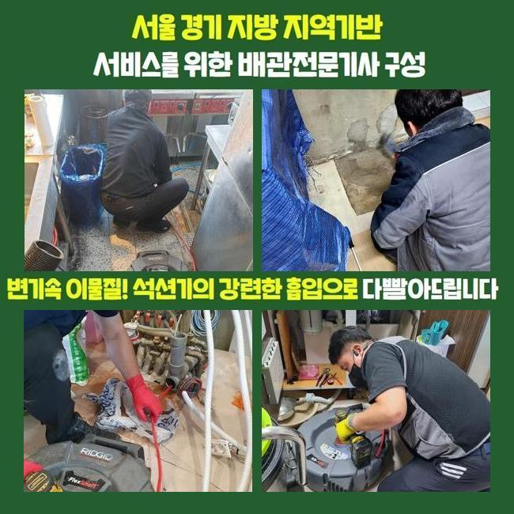
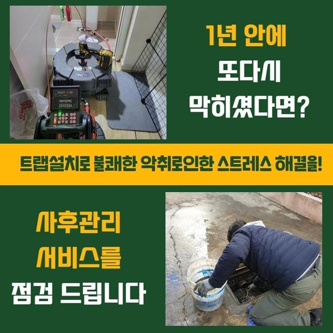
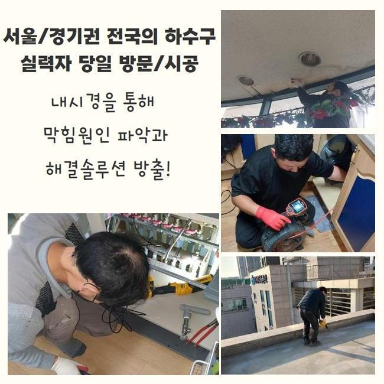
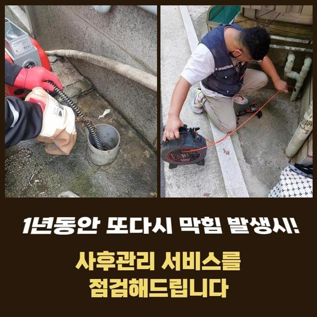
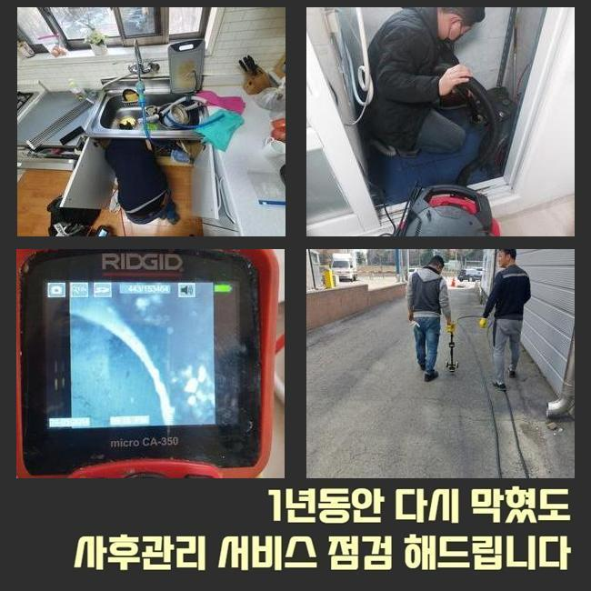
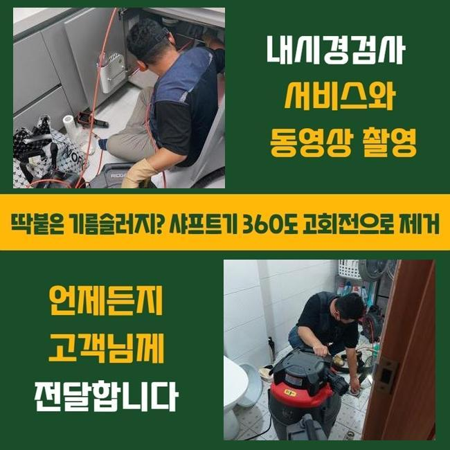

🏠 부평구 부평동씽크대배수구역류 일신동 맨홀역류 설비업체
용인 싱크대막힘 전문 시공 후기

📋 작업 개요
- 위치: 용인
- 서비스 유형: 싱크대막힘, 하수구막힘, 배관막힘, 맨홀막힘, 역류해결, 뚫는업체, 배관청소, 고압세척
- 작업 일시: 2025. 2. 19. 18:46
- 업체명: 하수구수사대 (010-5615-2118)
🔍 문제 상황
부평구 부평동씽크대배수구역류 일신동 맨홀역류 설비업체
주방에서 주방쪽이 막힐 시 식자재를 취급하는것에 다양한 애로사항들을 겪는데요
요식업소에서 해당 증상들이 발생하게된다면 매출에까지 좋지못한 영향들을 주죠
그렇기에 전문성을 갖춘 상태에서 해결해주는것이 중요하죠
식당내부의 하수도에서 통수오류가 발생했는데요
근방의 식당에까지 통수오류의 사태가 나타나게 되었습니다
해당 상황은 메인배수관에 이상이 생겼을 확률들이 있는데요
그렇기에 똑같은하수도를 사용하는 맨홀쪽의 진단도 진행되어야했던 현장으로 판단되었습니다
도착한 후 먼저 주방 조리공간이 막히게된걸 보게되었어요

🔎 원인 분석
💡 전문가 진단: 정밀 진단 장비를 사용하여 슬러지의 고착 여부를 판명하고 타격/세척 작업을 실시했습니다.
육안으로는 배수들이 불가한 상태였고 시공이 실시되어야했어요
하수도의 증상들은 수백가지의 요소로 나타나는데 그 가운데 대다수의 이유는 하수관이 오래되거나 잔여물질들이 축적되어서죠
막히는 증상은 위생 관련한 사항에도 대대적인 영향력들을 끼쳐서 그에 맞는 방식들을 꾀했어요
내시경장치를 하수관으로 집어넣고 상태들을 파악해보니 구간별로 이물질이 자리하고 있던것을 알 수 있었는데요
내시경케이블을 통해 말씀드리면 협소한 하수도를 확인하는 장비들로 렌즈가 있는 줄을 관로안으로 삽입하여 그때그때 가시적으로 보여주는 기기에요
점검하니 이물들이 배출이 안되고 고인 모습이였죠
하수관이 컨디션이 저하되었다던가 구조때문에 나타난 증상이 아닌 물이 흘러들어갈때 배출되던 잔해물들이 쌓이게되어 하수 배출을 힘들게 만든게 원인인것으로 판단되었습니다
바닥배관과 외부라인이 이어져있는 구조인지라 싱크대라인에서 등장한 증세들이 바깥부분에 영향력을 미친 현상으로 보였습니다
그 까닭을 파악하고 즉시 관로들을 뚫어보고자 청소해주었어요
해당 시점에 써준것은 플렉스 샤프트라는 기기로서 샤프트장비는 관로에서 돌아가면서 오염물질들을 제거하는 효자 장치죠

🔧 작업 과정
샤프트기계를 써서주면 조리공간이 막힌 때에 흡착물을 제거하고 더 나아가 배수관을 보호하면서 안전히 작업을 진행시킬 수 있죠
샤프트기기를 사용해 이물질이 쌓인 곳에 접근한 다음 체인으로 흡착물을 제거시켰어요
잔해물들이 샤프트기기에 엉킨채로 배출되었습니다
제거된 잔해물들을 관찰하니 생각한대로 씽크볼에서 흐르게된 음식물들과 기름덩어리가 상당했죠
이 중 식재료들이 많았었는데 손질하는 단계에서 뿌리부분의 잔재로서 개수대에서 흐르며 정체를 일으키는 주범으로 작용했죠
이러한 잔해들은 원활히 흘러가지 않아서 배수 길목에 정체되어 통수과정을 방해합니다
음식물들과 기름성분들도 대량으로 청소됐는데 조리 시에 쓰는 기름성분이 빠져나가면서 곳곳에 고착된것이죠
기름성분은 배수관에서 점진적으로 고착되며 벽라인에 붙어버리며 다른 식자재들과 뒤섞여 더욱 빠르게 막혀버리게 하죠
기름들은 지속해서 딱딱해지므로 간소한 방법으로 제거시키는것에 무리가따르는 현장이 참 많아요
샤프트기계를 삽입하여서 잔해들을 제거하고 흡입장치를 삽입하여 밑으로 떨어진 고착물들을 빨아당겨 깔끔하게 마무리했습니다
고형상태에 있던 돌덩이같은 기름들과 벽에 흡착되었던 오염물들도 폐기한 후 하수관을 내시경기기로 검수하며 오염도를 관찰할 수 있었습니다
증상들은 멈추게되었고 밖의 하수관의 솟구치는 영향까지 말끔하게 사그라들었습니다
작업들이 일단락되고 의뢰인께 조리공간 수챗구멍 관리적측면의 도움될만한 사항들까지 안내했는데요
일단 배수구안으로 잔해들을 거르지않은채 버리지않는게 선행되어야 한다고 전달했습니다
하물며 용해되지 않는 음식물들이나 기름물질들은 하수구 막힘의 막힘기조가 될 가능성이 높아 꼭 잔여물질들을 씽크대로 흘려보내지 마시고 미리 버려주실것을 부탁드렸어요
기름물질들은 관로의 내부에서 굳어버리므로 사용한 기름들은 주방타올로 걷어내고 세척해주시는것이 추천드리는 방법입니다


✅ 작업 완료
그밖에 증세를 예방하려면 계속해서 배수구들을 세척하고 상황별로 크리너를 쓰는게 도움되는것 또한 말씀드렸어요
의뢰자께서는의뢰인은 저희의 설명을 들은 후 신경써서 관리들을 꼼꼼히 하실것을 말하셨죠
하수구 문제들은 방임한다면 처음보다 수렁으로 빠지게 되어 미리 서둘러 처리하는것이 중요하겠습니다
작업이 순조롭게 진행되어 의뢰자의 불편들을 해결해서 다행이라 생각했고 예기치못한 트러블들을 막기위하여 적재적소의 관리책 이용이 수반되야함을 재차 전해드립니다



⚠️ 주방 싱크대 배관 막힘 예방 수칙
- ✅ 기름기가 묻은 식기나 프라이팬은 설거지 전 키친타올로 반드시 기름때를 닦아내세요.
- ✅ 주기적으로 싱크대 개수대에 뜨거운 물을 가득 받아 한 번에 내려 배관 내부 기름을 씻어내세요.
- ✅ 배수구 거름망을 미세한 필터로 사용하시고 음식물 찌꺼기가 틈으로 새어 들지 않게 관리하세요.
- ✅ 베이킹소다와 식초를 뜨거운 물과 함께 일주일에 한 번씩 부어주면 배관 살균과 막힘 예방에 좋습니다.
💡 핵심 정리
- 확실한 장비 작업(내시경 점검 및 샤프트 스케일링)으로 원인을 뿌리 뽑습니다.
- 작업 후 1년 이내에 동일한 부위 재발 시 100% 무상 A/S 서비스를 보장합니다.
- 서울 · 경기 · 인천 전 지역에 24시간 언제든 긴급 출동할 수 있도록 항시 대기 중입니다.
❓ 자주 묻는 질문 (FAQ)
🚨 용인 싱크대막힘 문제로 고민이신가요?
정확한 원인 진단과 확실한 시공으로 재발 없는 해결을 약속드립니다.
24시간 긴급 출동 | 서울 · 경기 · 인천 전지역 | 1년 내 재발 시 무상 A/S